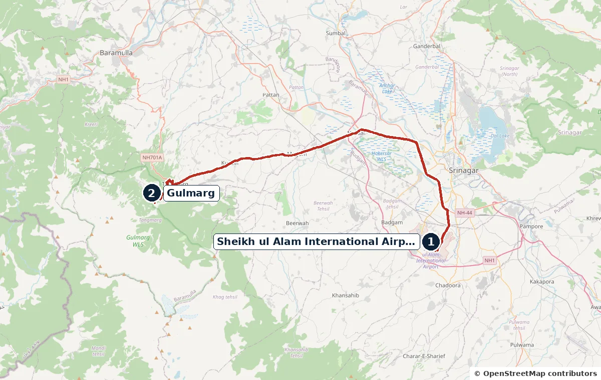
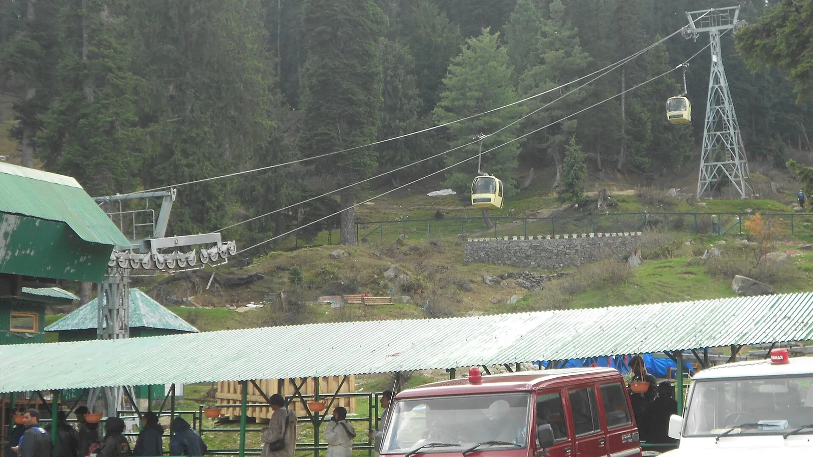
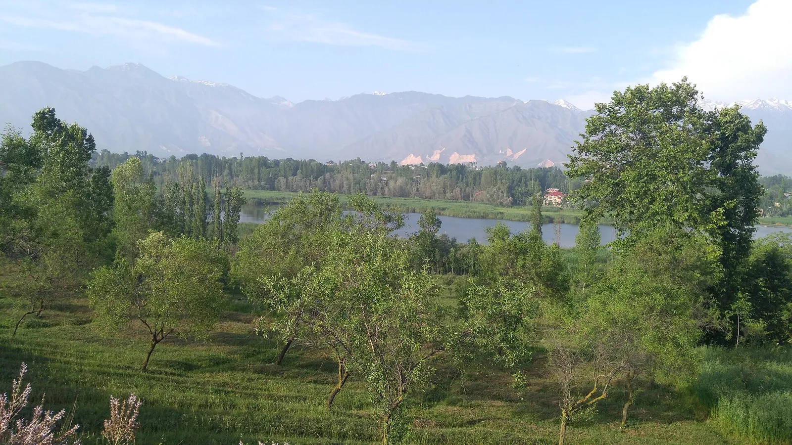
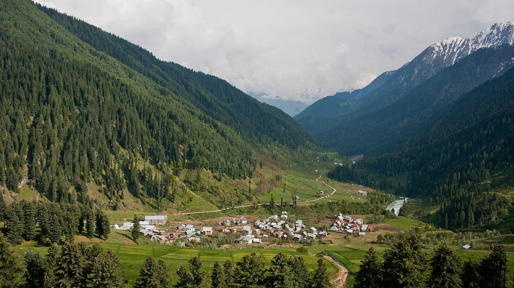
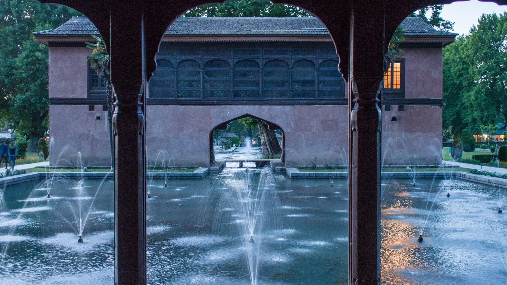
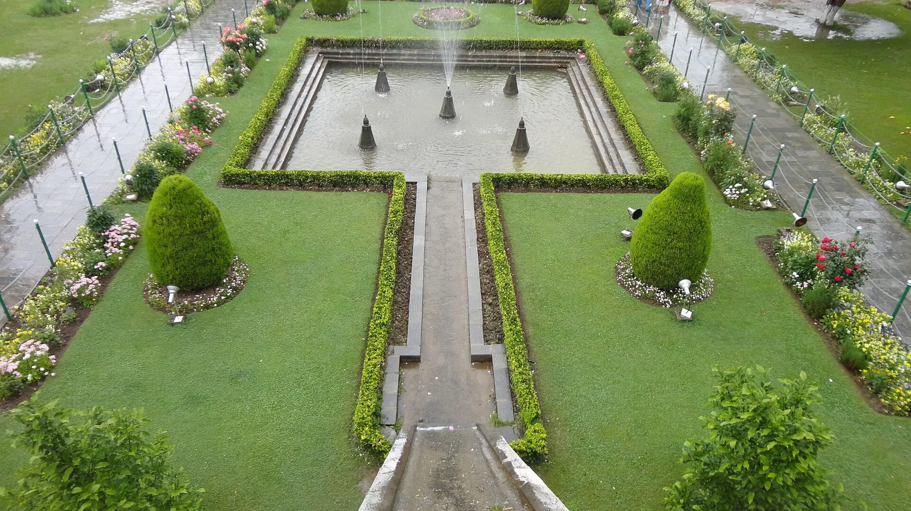
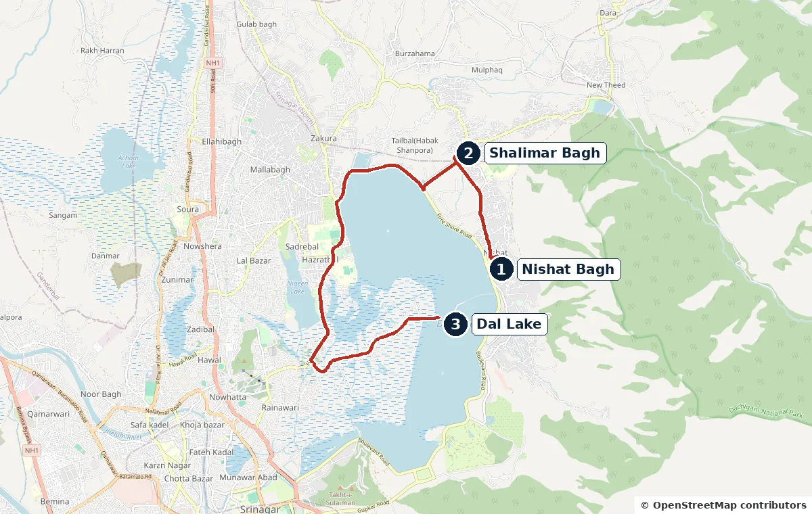

This plan goes beyond the classic Srinagar-Gulmarg-Pahalgam loop. After Gulmarg's gondola you stay in the quiet meadows of Doodhpathri, then in Pahalgam, and cross to the forested valley of Daksum for a day on Sinthan Top. After a night on Dal Lake you drive over Razdan Pass into Gurez, a valley of wooden villages on the Kishanganga that is cut off by snow for half the year. We tidied the original Day 6, which ran Pahalgam to Achabal to Daksum and back to Pahalgam: you now go one way, Pahalgam to Daksum via Achabal and Kokernag.
Trip highlights
- Gulmarg Gondola to Kongdoori and Apharwat
- Doodhpathri's meadow and river, still uncrowded
- Pahalgam, Betaab Valley, Aru and Chandanwari
- Achabal and Kokernag Mughal-era springs on the way to Daksum
- A day on Sinthan Top pass
- Dal Lake shikara ride
- Gurez Valley: Habba Khatoon peak, Dawar and the Kishanganga up to Chakwali
Your week at a glance
- Day 1Land in Srinagar and drive up to GulmargArrival day
- Day 2Gulmarg Gondola and the meadowsFull day
- Day 3Doodhpathri, the valley of milkTransfer day
- Day 4Saffron fields and Awantipora on the way to PahalgamTransfer day
- Day 5Aru, Betaab Valley and ChandanwariFull day
- Day 6Mughal springs of Achabal and Kokernag to DaksumTransfer day
- Day 7Sinthan Top passFull day
- Day 8Back to Srinagar and a Dal Lake shikaraTransfer day
- Day 9Over Razdan Pass into the Gurez ValleyTransfer day
- Day 10Along the Kishanganga to ChakwaliFull day
- Day 11Back to SrinagarTransfer day
- Day 12Fly home from SrinagarDeparture

Route: Srinagar » Gulmarg » Doodhpathri » Pampore » Pahalgam » Achabal » Kokernag » Daksum » Sinthan Top » Srinagar » Razdan Pass » Dawar
Day-by-day itinerary
Land in Srinagar and drive up to Gulmarg

- About 50 km, 1 hour 30 minutes
- Gulmarg about 2,650 m
On landing · Srinagar airport (SXR)
Meet your driver
With a name sign outside arrivals.
Afternoon
Through Tangmarg to Gulmarg
Pine forest and the meadow of flowers.
Evening
Free in Gulmarg
A walk to the St Mary's Church of 1902 and the Maharaja's palace.

Today's route
- Sheikh ul Alam International Airport
- Gulmargabout 62 km by road
Gulmarg Gondola and the meadows

- Gondola from about 09:00
- Phase 2 about 3,950 m
About 09:00
Gulmarg Gondola Phase 1
From the resort to Kongdoori at about 3,080 m.
TIMEBook online in advance; counters sell only what is left. Phase 2 closes in high wind.
Late morning
Phase 2 to Apharwat
Snow even in June, with views to Nanga Parbat on clear days.
CAREThin air at the top. Walk slowly, and skip Phase 2 with heart or breathing problems.
Afternoon
Pony ride to Seven Springs or Alpather Lake (optional)
Fix the price and route before you mount.
MONEYPony and guide rates are fixed by the local association; ask your driver for the card.
On the mapGulmarg Gondola Base StationKongdooriApharwat Peak
Doodhpathri, the valley of milk

- About 80 km, 3 hours
- Doodhpathri about 2,730 m
Morning
Drive via Magam and Khansahib
The last part of the road is rough.
Afternoon
Doodhpathri meadow
Walk along the Shaliganga river through open grassland and pine.
Evening
Quiet night in the meadow
Simple stays only, mainly tourism huts and guesthouses.
On the mapDoodhpathri
Saffron fields and Awantipora on the way to Pahalgam

- About 150 km, 5 hours
- Pahalgam about 2,200 m
Morning
Pampore saffron fields
Saffron flowers bloom in late October and early November.
BUYBuy saffron only from government-registered or GI-tagged shops.
Midday
Awantipora temple ruins
9th-century temples to Vishnu and Shiva, when open.
Afternoon
Along the Lidder River to Pahalgam
Check in.
On the mapPamporeAvantiswami TemplePahalgam
Aru, Betaab Valley and Chandanwari

- Local cab required
- Each place 10 to 16 km from Pahalgam
Morning
Aru Valley
A meadow village 12 km up the Lidder, base of the Kolahoi glacier trek.
MONEYYour own car cannot go to these spots; a local union cab is hired at a fixed rate.
Midday
Betaab Valley
A river meadow surrounded by pine.
Afternoon
Chandanwari
The start of the Amarnath Yatra trail, often with snow.
Evening
Pahalgam market
Kashmiri kahwa tea.
On the mapAru ValleyBetaab ValleyChandanwari
Mughal springs of Achabal and Kokernag to Daksum

- About 100 km, 3 to 4 hours
- Daksum about 2,400 m
Morning
Achabal Garden
A Mughal garden around a spring, laid out by Nur Jahan.
Midday
Kokernag
Springs and trout ponds in a botanical garden.
Afternoon
Daksum
A forest valley on the Bringi river.
On the mapAchabal GardensKokernagDaksum
Sinthan Top pass

- About 35 km each way, 1 hour 30 minutes
- Sinthan Top about 3,750 m
- Open about May to October
About 09:00
Drive up to Sinthan Top
Switchbacks through fir forest to snowfields.
Midday
At the top
Snow, wide views and a tea stall.
CARESpend under an hour at the top. Snow can close the road even in May and October.
Afternoon
Back to Daksum
Free evening.
On the mapSinthan Top
Back to Srinagar and a Dal Lake shikara

- About 100 km, 3 hours
- Shikara about 1 hour
Morning
Drive to Srinagar
Via Anantnag.
Afternoon
Mughal gardens (optional)
Nishat Bagh and Shalimar Bagh along the lake.
Evening
Shikara ride on Dal Lake
Past floating gardens and market boats to Char Chinar island.
MONEYShikara rates are posted at each ghat. Agree the route and time first.

Today's route
- Nishat Bagh
- Shalimar Baghabout 3 km by road
- Dal Lakeabout 12 km by road
On the mapNishat BaghShalimar BaghDal Lake
Over Razdan Pass into the Gurez Valley

- About 125 km, 6 hours
- Razdan Pass about 3,300 m
- Leave about 08:00
About 08:00
Leave Srinagar
Past Wular Lake, one of Asia's largest freshwater lakes.
Midday
Razdan Pass
Views of Harmukh and down into the valley.
CAREGurez is open to Indian citizens only; registration with original ID at the Army check-posts. Carry your ID.
Afternoon
Dawar
Gurez's main village below Habba Khatoon peak.
On the mapWular LakeRazdan PassDawar Gurez
Along the Kishanganga to Chakwali
- Drives on mountain roads
- Back in Dawar by evening
Morning
Habba Khatoon spring and the Kishanganga
The pyramid peak named after the 16th-century Kashmiri poet-queen.
Midday
Wooden villages of the Dard-Shina people
Log houses, waterfalls and fields along the river up to Chakwali.
Evening
Back to Dawar
Bonfire at camp, where allowed.
On the mapHabba Khatoon PeakChakwali Gurez
Back to Srinagar

- About 125 km, 6 hours
After breakfast
Drive over Razdan Pass
Check in to your Srinagar hotel.
Evening
Lal Chowk or Polo View market
Pashmina, papier-mâché and walnut wood.
BUYBuy pashmina with a GI-tag label from government emporiums.
On the mapSrinagar
Fly home from Srinagar

- About 15 km, 45 minutes plus security
As per flight
Transfer to Srinagar airport
Leave at least 3 hours before departure.
TIMEThere is a security check at the airport gate and another at the terminal. Do not cut it close.
On the mapSheikh ul Alam International Airport
Where you stay
Hand-picked hotels, huts and guesthouses
Comfortable hotels in Gulmarg, Pahalgam and Srinagar. Doodhpathri, Daksum and Gurez have only simple huts, lodges and guesthouses: clean and warm, but basic.
What's included
- 11 nights in the stays listed, with breakfast and dinner
- Private car for all transfers and sightseeing (excluding union-cab sectors)
- Shikara ride on Dal Lake
- 24/7 support from Blue Diamond Voyage
Not included
- Flights
- Gulmarg Gondola tickets (paid directly, subject to availability)
- Local union cabs at Pahalgam and Gulmarg
- Pony rides
- Lunches and entry fees
- Travel insurance
Visa, entry and phones
| Permit | What it is | Who | Cost |
|---|---|---|---|
| Gurez registration | Registration with original ID at Army check-posts | Indian citizens only | — |
| Original photo ID | Carry it every day; checked often | Everyone | — |
| Photo ID | Aadhaar, passport, driving licence or voter ID for flights, trains and hotel check-in | Indian citizens | — |
| Indian e-Visa | Tourist e-Visa applied online before travel | Foreign nationals (not OCI holders) | Varies by nationality |
| Monument tickets | Most ASI monuments sell tickets online and by UPI at the gate | Everyone | About INR 20 to 50 for Indians, more for foreigners |
- Carry the original photo ID, not a photocopy. Security at airports and many temples checks it.
- Phone and internet: Jio and Airtel work best across most of this route. Download offline Google Maps before hill or forest stretches, where signal drops.
NOTEWhen you book, we arrange the paperwork with you and share every document on your trip's WhatsApp group before departure.
Good to know
UPI, cards and cash
UPI works almost everywhere, even at small stalls. Keep some cash in INR 100 and 200 notes for temples, parking, tips and places where the network is weak.
Temple and shrine etiquette
Cover shoulders and knees. Remove shoes where asked, and carry socks for hot stone floors. Leather belts and bags are not allowed inside some Jain and Hindu temples. Ask before photographing people and inside shrines.
Water and street food
Drink sealed bottled or filtered water only. Choose busy stalls where food is cooked in front of you, and skip cut fruit and ice from roadside stalls.
Driving times
Indian roads are slower than the kilometres suggest: plan on 40 to 50 km an hour on highways and much less in hills and towns. Your driver's breaks and meal stops are built into the timings.
Plugs and tipping
Plugs are Indian three-pin and two-pin, 230 volts. Tipping drivers and guides about INR 300 to 500 a day is appreciated.
In an emergency
All emergencies (India) 112 (police 100, ambulance 108)
Tourist helpline 1363 (Ministry of Tourism, 24 hours, multilingual)
Blue Diamond Voyage 24/7 +91 98242 21400 and +91 97148 59797
Best time to go
May to October. Gurez and Sinthan Top open only when the snow clears, usually from May or June to October. September and October are clear and golden, with saffron in bloom by late October.
| May to June | Good | Meadows green, snow on the passes; Gurez opening. |
| July to August | Good | Warm days; Amarnath Yatra crowds in Pahalgam. |
| September to October | Best | Clear skies, autumn colours, saffron harvest. |
| November to April | Winter | Gurez and Sinthan Top closed; Gulmarg is for skiing. |
Frequently asked questions
Is Kashmir safe to visit now?
The tourist areas on this route are heavily secured, and visitors continue to travel. After the April 2025 attack in Pahalgam some meadows were closed. We follow government advisories daily and change the plan if needed.
Can foreign nationals visit Gurez?
No. Gurez is open only to Indian citizens. Foreign guests can spend the extra days in Sonamarg instead.
Do I need to pay extra at Pahalgam and Gulmarg?
Yes. Local union cabs, pony rides and the Gondola are paid directly. We give you the official rate cards in advance.
Can I stay on a houseboat?
Yes. We recommend one night on a deluxe Dal Lake houseboat.
Can this itinerary be changed for our dates and pace?
Yes. Every Blue Diamond Voyage itinerary is a starting point. We change the number of nights, the hotels, the pace and the activities to suit your family, and send you a personalised quote.
Photo and map credits
- Day 1: Swuh2001, CC BY 4.0, via Wikimedia Commons
- Day 2: Hidden macy, CC BY 3.0, via Wikimedia Commons
- Day 3: Ankur P from Pune, India, CC BY-SA 2.0, via Wikimedia Commons
- Day 4: Ashfaq ahanger, CC BY-SA 4.0, via Wikimedia Commons
- Day 5: KennyOMG, CC BY-SA 4.0, via Wikimedia Commons
- Day 6: Mike Prince from Bangalore, India, CC BY 2.0, via Wikimedia Commons
- Day 7: Madhumita Das, CC BY-SA 4.0, via Wikimedia Commons
- Day 8: Nishkamrazdan, CC BY-SA 4.0, via Wikimedia Commons
- Day 9: Mohit.vaishnav1, CC BY-SA 4.0, via Wikimedia Commons
- Day 11: KennyOMG, CC BY-SA 3.0, via Wikimedia Commons
- Day 12: Swuh2001, CC BY 4.0, via Wikimedia Commons
- Maps: © OpenStreetMap contributors; road routes by OSRM. Distances are by road; drive times on this page allow for local traffic.
Make this journey yours
Every Blue Diamond Voyage itinerary is a starting point. Tell us your dates, your city and how you like to travel, and we shape the hotels, the pace and the food around you. Timings and local details were checked on November 2026 and are reconfirmed for your dates when you book.